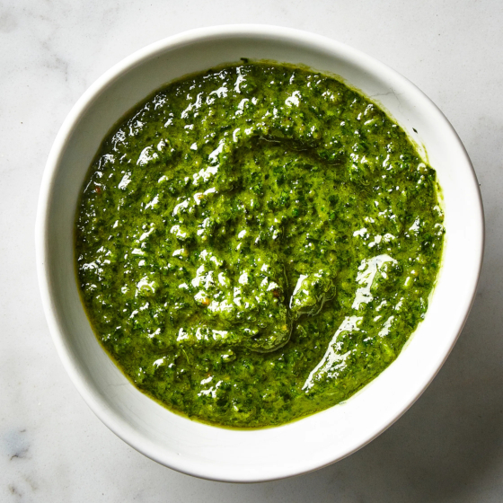

Pesto

Description
An ancient recipe from the romans.
Ingredients
- Basil
- Extra virgin olive oil
- Pine nut
- Garlic
- Salt
- Grind the pine nut garlic and salt into a thick paste
- Mixed in the basil, and slowly drizzile in olive oil, continue to grind until smooth texture
- Serve with freshly cooked pasta, or dipped with crackers